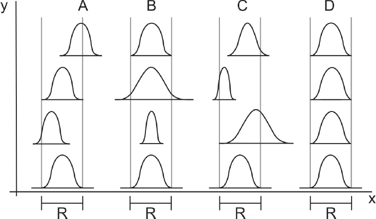

O gráfico abaixo mostra quatro estágios (A, B, C e D) de um
processo ou situação estatisticamente controlada por um
Farmacêutico. Para cada estágio, o nível de qualidade é
refletido pelo valor médio X e a variabilidade inerente é
demonstrada pela faixa R do gráfico.

Considerando as condições ilustradas, pode-se concluir que
-
no estágio A, a variabilidade inerente permanece essencialmente
constante, mas o nível de qualidade desvia de
tempos em tempos.
-
no estágio B, o processo ocorre sob condição ideal de
controle de qualidade.
-
no estágio B, ambos os níveis - qualidade e variabilidade
inerente - sofrem oscilações.
-
no estágio C, o nível de qualidade permanece essencialmente
constante, mas a variabilidade se altera de
tempos em tempos.
-
nos estágios C e D, a falta de controle pode ser claramente
observada.